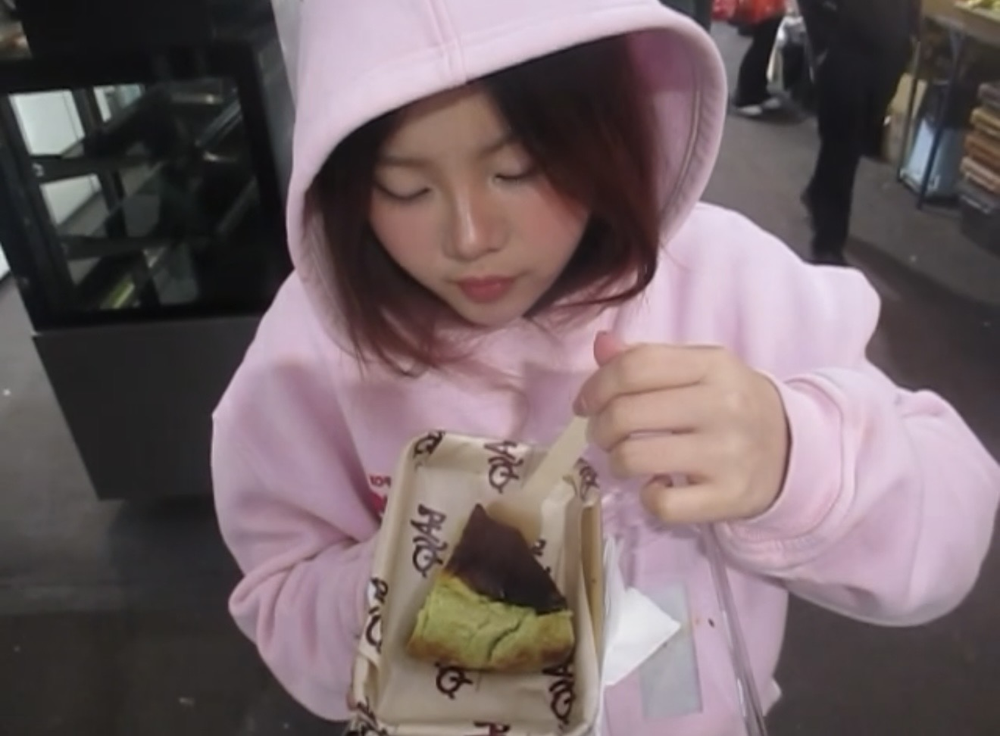
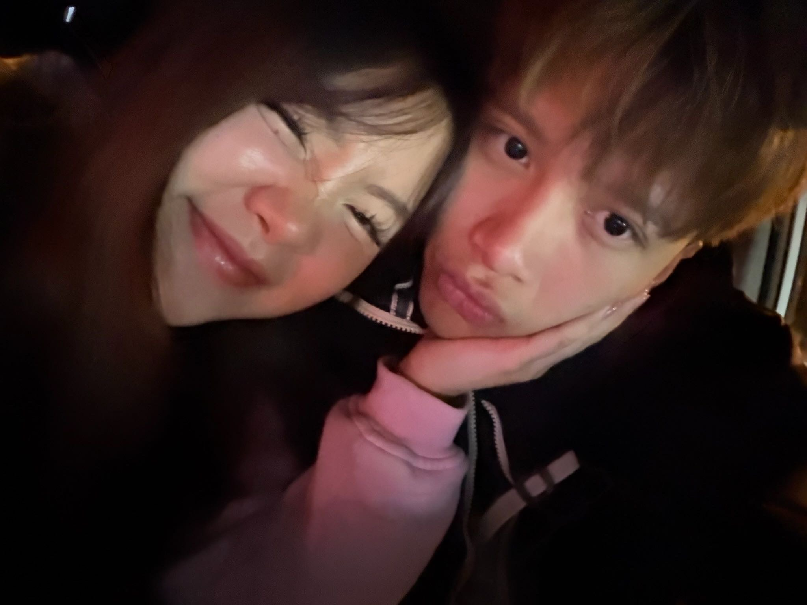
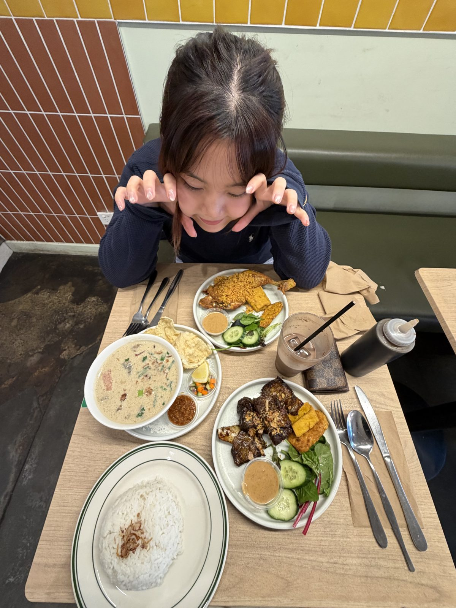

Hi baby, I hope you do enjoy this little surprise. 🤍
🧑
Bi
1895
👩
Choé
2115
a few of your favourite things
a few reasons, out of many
a few of our moments

that one day 🤍

this made me smile

my favourite one
one more thing
made this for you too 🤍
🤍
there's something for you
tap the envelope to open it
Dear Choé,
Hello Trang Linh,
Anh cũng chẳng biết bắt đầu từ đâu nữa hì. Thật ra anh cũng luôn muốn viết thư cho em, anh cũng biết em thích nhận thư tay, em xứng đáng nhận, nhưng đợt em sang anh cũng không hiểu bản thân anh bị gì nữa. Anh nghĩ anh sống bằng cảm xúc giả nhiều quá, nên cảm xúc thật của anh đôi lúc nó bị process chậm lại, như kiểu đến mấy ngày cuối nó mới overflow í, tự nhiên anh bị emotional quá xong clingy quá, đến bây giờ cũng vậy. Bản thân anh cũng thích thư tay lắm, từ bé anh cũng lớn lên với thư tay rùi, bố mẹ đi làm xa mà, chưa kể sau này lúc còn nhỏ, ở nhà một mình, mẹ cũng hay viết note dán lại ở trên tv, tủ lạnh, etc… để nhắc anh lúc ở nhà một mình. Anh thích viết thư, và tin nhắn dài lắm, đôi lúc nó lại hay hơn là nói chuyện thẳng với nhau, người viết được bày tỏ một cách chi tiết, rõ ràng, chỉn chu mà người nghe cũng có thời gian đọc để ngẫm và hiểu nhỉ.
Hôm nay anh vừa đi làm ca đêm về, 2 giờ sáng rùi, anh cũng không còn tâm trí để nghĩ xem em về được mấy hôm rồi nữa. Từ lúc em về, anh sinh hoạt cũng không tệ, nhưng những lần anh ngủ anh sợ lắm, nó cứ mê mệt mà như kiểu bị bỏ bùa vậy, làm anh không còn xác định được tỉnh hay mơ, đêm hay ngày nữa. Hôm trước anh cũng có kể em rồi nhỉ, từ lúc em về, anh cứ nằm xuống ngủ là sẽ mơ về em, mà toàn ác mộng không à, hôm thì mơ em vẫn nằm cạnh rồi tự dưng dậy không thấy đâu, vẫn còn mê ngủ còn dậy lật chăn ra tìm em, hôm sau thì mơ em ôm một người khác,... Anh cũng không hiểu sao bản thân anh lại thành ra như này, anh cũng biết một phần nhưng anh không chắc nữa… Một phần chắc vì em đến rồi đi cho anh cảm giác hạnh phúc quá rồi lại quay lại cuộc sống một mình như trước, giống như những người quen khổ rồi xong tự dưng một giây sướng là họ sẽ không quay lại được nữa vậy. Một phần cũng có thể vì anh yêu em quá rùi, nghe sến thật nhưng mà thật lòng thì lâu lắm rồi anh mới có cảm giác yêu ai nhiều đến vậy, nghe tệ nhỉ, anh công nhận, nhưng mà nhiều người trước, mập mờ hay nyc, thật lòng anh không có được cảm giác đấy đâu. Nhiều lúc anh kể bạn anh, cảm giác như bị ai nguyền ấy, như thể sẽ không bao giờ có thể yêu ai thật lòng được nữa, dù trước mọi người cũng rất tốt. Nhưng bây giờ gặp em rồi, mặc dù mấy hôm nay anh cũng hơi buồn, nhưng nghĩ lại anh lại thấy vui, và may mắn vì cuối cùng anh cũng tìm được một người anh thật lòng yêu và muốn ở bên cạnh.
Nhưng em biết không, mấy hôm nay anh thấy rõ lắm, anh cũng tự nhủ là không phải vậy đâu, như kiểu vẫn in denial phase ấy, nhưng mà không hiểu sao anh cảm nhận rõ được sự thờ ơ của em trong mối quan hệ bọn mình ấy. Anh cũng luôn an ủi bản thân là em bận, em mệt và có nhiều chuyện khác em phải lo, nhưng thật tâm anh biết em cũng dần hết hứng thú và mất tình cảm với anh rồi…Anh nghĩ em cũng giống anh, từ nhỏ lớn lên đã phải nhìn sắc mặt người lớn mà sống chứ không vô tư hồn nhiên như nhiều đứa trẻ con khác. Em dù rất ngoan nhưng bố mẹ vẫn cưng chiều anh trai, để bản thân em bị thiệt thòi nhiều, còn bản thân anh cũng sống cùng cả mẹ kế và dượng, rồi phải ở nhờ nhà ông bà nên lúc nào anh cũng phải để ý người khác mà sống. Sau này lớn lên mẹ anh cũng luôn dạy anh từng nét mặt, facial expression của người khác, bắt bản thân anh phải luôn để ý xem người ta có đang khó chịu và giả vờ với mình hay không. Dạo gần đây anh không để bản thân anh attach với ai đâu, vài năm nay rồi, vì anh biết lúc anh bị attached rồi bản thân anh trông desperate lắm, như bây giờ này:) fuck, đang viết thư xong cứ quay ra nhắn tin với em làm anh mất mạch=)) nhưng mà phải chịu, mấy hôm nay em rep chậm và cụt lủn quá, anh phải tranh thủ rep nhanh để được nói chuyện với em, không em lại biến mất xong anh lại phải chờ, and then i cant chờ i will double text and trông anh like a fucking loser and desperate idk fml. Ok where was i? Ummmm, u losing feeling ok, fuck im kinda lan man, sorry for that, but I really do hope that you read this all, because I love you and I know you love letters. Okay sorry anh cứ vừa viết vừa quay ra nhắn tin, đang nhắn cái em định đi ngủ xong anh giải mà okay and oke cho em hihi. Nhưng mà mấy hôm nay có nhiều cái nhỏ mà anh để ý quá, ví dụ như anh up em lên str có vẻ em cũng thích nhưng xong anh thấy em up một cái tiktok, anh siêu excited nhưng bấm vào xem lại ko có anh, xong Thảo lại rep str anh bảo sao dí bạn thế như kiểu em không thích mấy làm anh hoài nghi cuộc sống vl, like am I doing this right, does she not want this,... xong anh nhắn Nhi về em Nhi cũng ghost anh, anh nhắn Hạnh thì Hạnh giúp nhưng cũng không nhiệt tình, không đẩy như trước, and then I just pick up really little things, but many of them, and they hit me hard:( like I know you are losing feeling, you are, or it could be that youre just busy with things, you told me that you have a lot going on with your life, family and all that, I know. But it could also be that, you are busy, and you are losing feelings as well idk.
But like whatever, I can not do anything about it, I was going to be straightforward about it today but then I got scared, what if you actually want to stop, or think its better to stop talking, that I cant take… So I just kept it to myself, because I still want to try, maybe I could make you like me more, again, maybe I could make it work again. Anh cảm thấy rất may mắn vì tìm được một người mình thật sự yêu ấy, nên anh nghĩ buồn như này phải chấp nhận thui, nó chỉ càng chứng tỏ anh yêu em thật lòng, nên anh mãn nguyện. Nhưng chính vì thế nên anh vẫn muốn cố thêm chút. Nên em à, please, give me another chance, I will prove it to you, that I can work this out, we will work out.
It 3am now, fuck I miss you, babe did you know, mấy ngày hôm nay anh hơi rách một chút hihi, nhưng anh có bao nhiêu anh cũng muốn dành cho em hết, anh rất xin lỗi vì lúc em qua anh không kịp chuẩn bị gì cho em, lúc đấy thực sự anh stress quá anh không nghĩ nổi cái gì, anh chỉ cố gắng plan trip được cho em thui, nên nay anh cố bù lại cho em một chút. Anh cố trích ra ít tiền để gửi về vn mua quà cho vợ iu, phải nhờ cả anh đạt chuyển tiền hộ tại bank anh không vào được, xong nhờ thằng bạn duy nhất còn ở vn đi chuẩn bị quà cho hộ tại anh không đặt được mà cũng không gom quà vào hết được, bố mẹ thì bận mà không còn ai khác giúp được anh. Anh cũng muốn chu đáo một tí vì là tặng em mà, không chu đáo với em thì chu đáo với ai nữa nhỉ.
Okay I been trying to make a little website for you, make it look a bit cute, but very time consuming on the details. Its 4:21am, I will get some sleep baibai. Babe you know what, i dont know why but that one day when i took you to kingspark, hôm đấy anh buồn ỉa vl and then I was really uncomfortable, I am so so so fucking sorry that I probably made you feel bad and unenjoyable too, like you really wanted to hangout and sightsee stuffs, and I kept telling you to stay home and that I dont want to go with you. I feel terrible and regret it so much now, but it feels so funny, like looking back, I felt like we were a divorced couple forced to go hangout to hàn gắn you know:) But its just that one day, dont get me wrong I freaking love you. Nhưng thật sự ấy, bây giờ nghĩ lại anh thấy bản thân tệ thật, anh không hiểu sao đáng nhẽ ra đi chơi là cả hai phải vui mà anh cứ làm nó như là anh đang làm một việc tốt cho em vậy, nó là cho our relationship, its for us why did I act like that, I am so so sorry for how inconsiderate I was. Đầu anh đang khá ngáo, em đọc thư này sẽ thấy nó lộn xộn và thiếu trình tự vãi, nhưng thực sự nó là theo live dòng suy nghĩ của anh ấy:) anh nhớ ra gì anh sẽ kể cho vợ nha, mỗi ngày anh sẽ viết thêm vào cho đến hôm anh gửi em. Anh còn nhiều điều muốn nói lắm nhưng đầu anh chưa cho anh nghĩ ra, I will actually go to sleep now and save what I want to say for tomorrow so the flow is smoother and you don't have to read my horrible writing.
Its 2pm, im still in bed, writing this on my phone. Anh định lát nữa mới viết tiếp nhưng anh sợ anh quên mất chuyện này, cái vụ anh post em trên tiktok ấy, I just want to talk about it again because I thought about it again today and it really bothered me, lâu lắm rồi anh không public ai cả, một phần vì anh ngại, và một phần bố mẹ anh cũng dạy như thế, anh cũng hơi mê tín chút vào cái kiểu demons eyes ấy, là cái gì tốt đẹp thì nên giấu, vì càng khoe ra sẽ càng nhiều người ghen, ghen tị và attract năng lượng xấu. Thảo trêu kiểu cứ dí bạn thế, and then em post tiktok không có một tí nào anh TT. Really got me questioning myself and my life decisions, am I doing this right, is this weird? Nhi thì không rep and then everyone is just acting very weird, almost like theyre not believing in us anymore, and obviously they wouldnt just do it out of nowhere, maybe they knew something i dont, maybe you told them something that you havent told me yet, maybe, just maybe….. But anh vẫn phải an ủi bản thân, anh vẫn phải cố tiếp với tin tưởng tiếp, anh vẫn hi vọng có thể cứu được bọn mình, cho em một vài bất ngờ nho nhỏ, hi vọng làm em thích, maybe then things will get better, but babe, Im afraid that will be my last straw… Nếu không được nữa, anh sợ mình không còn đủ tự tin và niềm tin để cố gắng nữa, mặc dù anh yêu em rất nhiều và rất sợ mất em. Nhưng tình yêu và sự cố gắng từ một phía thì làm sao mà được. But at the end of the day, you complain about heartbreak because you got to experience love right, đây là sự may mắn rồi, but im still sad:/
Hello babe, anh vừa đọc được một câu này rất hay, con người cần ít nhất một lí do để kiên cường. Nếu trong tim không có chốn dừng chân, thì đi đâu cũng là lạc lối. Thật sự hiện tại trong chuyện tình cảm, em là lí do duy nhất để anh không bỏ cuộc rồi Trang Linh ạ.
Anh thích em, anh thích cái năng lượng tích cực của em, cuộc sống nhiều màu sắc của em, cách em đối xử tốt và suy nghĩ cho cả mọi người. Thích cách em giữ khoảng cách với anh lúc ban đầu. Cả việc em chăm chỉ đi làm, yêu thương và vun vén cho cha mẹ, gia đình. Thích sự thông minh và khéo léo của em. Ban đầu là vậy nhưng giờ đây bản thân anh trở nên tiêu cực, anh lại sợ chính những cái đó, anh sợ những người khác cũng sẽ vì những cái anh thích mà để ý em rồi tiếp cận em. Em biết không những lần anh an ủi em về bọn mình, thật ra là anh tự an ủi bản thân nữa:(
Khoảng 3 năm trước ấy, đúng 3 năm luôn, anh lụy xong trầm cảm lắm, mà đợt đó cũng may còn có bố mẹ bên cạnh. Sau lần đấy, bản thân anh sợ bị attached lắm, nên anh yêu đương tệ cực, anh cảm giác anh yêu nhưng luôn giữ một khoảng cách an toàn, để nếu có gì xảy ra anh cũng không bị tổn thương quá nhiều. Nhưng bây giờ anh lại rơi vào trường hợp y hệt rồi, dạo này anh cảm thấy anh bị sao ấy, cả ngày tâm trí anh chỉ nghĩ về em thôi. Anh nghĩ là anh sợ, vì bọn mình còn thiếu chắc chắn quá, anh yêu em. Bản thân anh thiếu tự tin lắm, từ nhỏ rồi, một phần là do cách giáo dục ở với ông bà, còn những yếu tố khác thì anh cũng không chắc, nhưng cái sự tự tin, ego mà trước giờ anh cho em thấy là anh gồng lắm ấy:) Nhất là mấy lúc đi du lịch và đi Sydney. Sau này, lúc ở với mẹ, mẹ lúc nào cũng luyện cho anh phải có phong thái tự tin, dù bản thân anh chưa tự tin, nên anh thấy mình có nhiều vấn đề lắm. Anh nói cũng không phải để em thương hại hay gì đâu nha:) như thế tình cảm mình chỉ càng đi xuống thôi, anh muốn em hiểu và biết hơn về anh thui, anh vẫn cố gắng build bản thân để tự tin hơn hihi.
Anh cũng không hiểu tại sao anh thích em nhanh tới vậy, nếu anh là em chắc anh cũng hoài nghi lắm, nhất là em lại thông minh và hay để ý nên chắc em cũng thấy lạ. Nhưng thật sự lúc ở bên Sydney anh thích em rồi, vậy nên em nhớ bọn mình dù mới gặp nhưng đã nói chuyện nghiêm túc những cái misunderstanding rồi ấy. Bởi thật sự nó rất ảnh hưởng anh, lúc đấy anh cũng hơi lo rồi, nhưng đến bây giờ đúng là hết cứu thật, bây giờ anh mới process được hết cảm xúc dành cho em, anh thấy đúng là đâm lao thì theo lao thôi, anh sẽ giãi bày hết và cố hết sức của anh để xây dựng mối quan hệ này.
Mấy hôm nay anh dễ bị xúc động quá, từ hồi bé đến giờ anh chưa bao giờ khóc luôn ấy, trừ khi kiểu bị mắng hay cãi nhau bố mẹ gì thoi mà cũng từ cấp hai cấp ba rùi, mà mấy hôm nay anh khóc vãi, anh mới thấy bản thân mình thật sự thay đổi rồi, mà anh cũng vui. Anh thấy bản thân vẫn thể hiện cảm xúc ra được, khóc được nó cũng giúp xả ra. Mà nhạy cảm lắm nhé, anh lướt tiktok cứ thỉnh thoảng lại rưng rưng xong khóc à, mấy cái anh gửi em í.
Mai là hạn rồi, chắc anh cũng phải kết thư dần thôi. Có một chuyện anh phải nói thật với em, vì anh muốn yêu em và được em yêu, muốn bọn mình đến được với nhau một cách chân thành nhất nên anh sẽ thú thật hết với em. Từ lúc nói chuyện với em, anh không nói chuyện tìm hiểu một ai khác, nhưng có một chuyện anh vẫn giấu em: Đợt trí sang, còn một em nữa cũng sang, em này hồi trước anh cũng có nói chuyện, nhưng không đi đến đâu cả và cũng không nói chuyện với nhau gần một năm rồi, sau này cả hai cũng có người mới rồi. Lúc nó sang thì nó cũng biết là anh đang nói chuyện với em, biết từ trước khi anh kể cơ, tại thấy trên tiktok ấy, và mục đích nó sang cũng là để cố hàn gắn với giúp trí và ti. Anh xin lỗi đã giấu em, anh đã nghĩ nếu em không biết thì em sẽ không phải nghĩ nhiều, anh cũng sợ nếu em biết em sẽ thấy cấn và không muốn nói chuyện với anh nữa, nhưng bản thân anh thấy vậy không đáng vì anh không thể mất em vì nó được. Em yên tâm, cả hai bọn anh vẫn tôn trọng cuộc sống riêng của nhau, anh không có tình cảm với nó, nó cũng biết đến em, nên bọn anh giữ khoảng cách, sau này lúc về Syd, trí cắt với bọn nó anh cũng đã không còn liên lạc gì với bọn nó nữa rồi. Anh giấu em anh cũng nghĩ sớm muộn cũng phải nói thôi, anh xin lỗi đã nhiều lần em cho anh cơ hội nói nhưng phải để đến giờ anh mới nói được. Em nói đúng, anh hèn thật, em biết không đối với em câu xúc phạm nhất là nói em không biết suy nghĩ, thì lúc em nói anh hèn anh buồn lắm. Buồn vì bản thân anh thấy đúng thật, nhiều lúc anh thiếu tự tin, sợ nhiều thứ, rồi overthink, sợ, rồi thành ra mọi thứ lại càng rối hơn, có nhiều chuyện nếu anh cứ xử lý đơn giản, thẳng thắn chắc đã tốt hơn. Anh xin lỗi em nhiều.
Anh hi vọng em hiểu, thật sự không có gì cả, nó không đáng để em phải suy nghĩ, cái khúc mắc lớn nhất chắc là việc anh giấu em, anh hiểu, nếu là anh anh cũng sẽ rất buồn và lo, giống như nhiều lần càng nói chuyện với em anh càng phát hiện ra nhiều thứ làm anh lo vậy. Nhưng anh hi vọng em cho anh thêm một cơ hội, tin anh một lần nữa, mình transparent với nhau, có một base tốt trước khi xây dựng một mối quan hệ nghiêm túc hơn. Anh yêu em là thật, anh muốn sửa những cái chưa tốt của anh, và dành cho em những gì tốt nhất anh có thể. Cho anh một lần thử, anh sẽ chứng minh cho em thấy anh cũng có khả năng yêu em, anh sẽ cố gắng hết sức của anh, sẽ không để em phải suy nghĩ, lo lắng, anh muốn cố gắng đến cùng, vì em, vì bọn mình.
Trước anh cũng có kể em hồi mình còn tìm hiểu nhau ở Sydney, khi anh yêu ai, anh luôn muốn thấy được một đích đến chung. Tuy bọn mình đích chung hơi xa, nhưng anh thấy vậy còn đỡ hơn là sau này không có đích chung rồi, mỗi người một nơi. Nhưng nay xem kỹ lại, anh buồn mà anh khóc, anh thấy nó xa quá, anh thấy cũng không dễ, bản thân anh cũng rất tự tin, nhưng anh vẫn buồn cho bọn mình quá, ý là, bọn mình cũng yêu nhau, sao lại khó khăn hơn người khác nhiều thế nhỉ. 1 năm nữa cả 2 tốt nghiệp, rồi 2 năm master, rồi 2-3 năm anh mới apply visa được, rồi nay anh đọc được tin có visa bang sẽ yêu cầu ở lại sống 2-3 năm, vậy là nhanh nhất phải 7 năm nữa mình mới về chung sống được với nhau, nghe lâu nhỉ nhưng mà tự nhiên tính ra lúc đấy 27 thì cũng không tệ lắm hihi, nhưng mà anh biết mà, nghe điên thật. Anh luôn cố figure mọi chuyện, nghĩ ra viễn cảnh đẹp nhất để an ủi bản thân bước tiếp, nhưng chuyện bọn mình, dù có vẽ viễn cảnh đẹp nhất anh vẫn thấy gian nan quá, anh tủi thân lắm, anh cũng muốn yêu em mà sao ông trời thử thách ghê quá. Anh cũng nghĩ, cuối năm nay bằng cách nào đó mình gặp được ở vn, rồi sang năm gặp 1 lần ở úc, sau đó anh và em ở úc rồi thì cũng phần nào dễ dàng hơn, nhưng khó nhất bây giờ, là mình đi được cùng nhau tới đó, rồi cuối năm nghe cũng rất khó vì mình nghỉ lệch nhau:/ Nhưng mà Trang Linhh, anh nói vậy để em thấy anh cố gắng vì bọn mình thôi nha, em đừng nản nha:( Anh hứa sẽ cố gắng, lúc nào em mệt mỏi anh sẽ cố gánh cả phần em nữa, anh bước 999 bước còn lại oke chưa;) em chỉ cần cho anh thấy được tình cảm em, và em cũng muốn thôi, cái gì anh cũng vượt qua được. Má, anh đang viết cho em 12:40am rồi, tự nhiên anh trai anh gọi xong anh lại khóc, không kìm được luôn ấy, tủi thân điên. Pls đừng thương hại anh hay look down anh nhé:( im just in that phase, I will for sure be better, comeback haha.
Hopefully soon to be something, Nguyen Son Tung Le - Bi Yeu em Choé